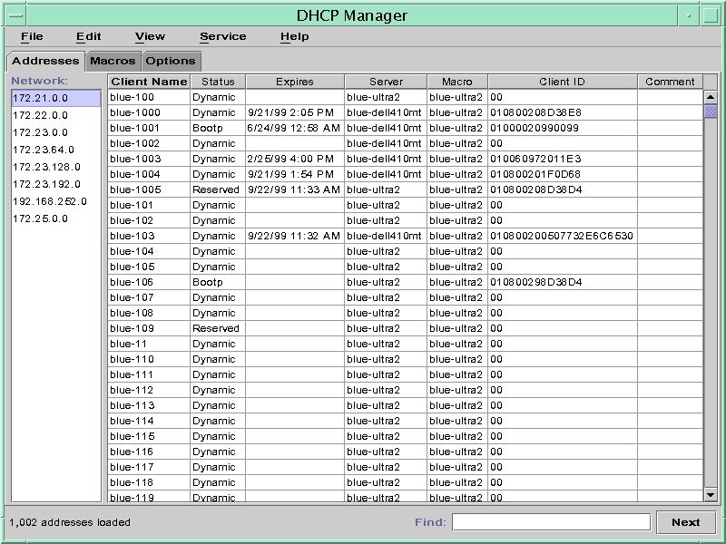
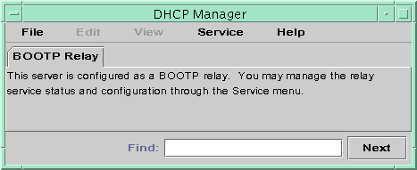

Previous
Previous
Administering DHCP (Tasks)
This chapter describes tasks that you might find useful when you administer the Solaris DHCP service. The chapter includes tasks for the server, BOOTP relay agent, and client. Each task includes a procedure to help you perform the task in DHCP Manager and a procedure for the equivalent task with DHCP command-line utilities. DHCP command-line utilities are more fully documented in man pages.
You should have already completed the initial configuration of your DHCP service and initial network before you use this chapter. Chapter 14, Configuring the DHCP Service (Tasks) discusses DHCP configuration.
This chapter contains the following information:
Supporting Solaris Network Installation With the DHCP Service
Setting Up DHCP Clients to Receive Information Only (Task Map)
About DHCP Manager
DHCP Manager is a graphical user interface (GUI) tool that you can use to perform administration tasks on the DHCP service.
DHCP Manager Window
The DHCP Manager window's appearance depends on how the DHCP server is configured on the system on which DHCP Manager is running.
DHCP Manager uses a tab-based window when the system is configured as a DHCP server. You select a tab for the type of information you want to work with. DHCP Manager features the following tabs:
Addressestab - Lists all networks and IP addresses placed under DHCP management. From the Addresses tab, you can work with networks and IP addresses. You can add or delete items individually or in blocks. You can also modify the properties of individual networks or IP addresses or simultaneously make the same property modifications for a block of addresses. When you start DHCP Manager, the Addresses tab opens first.
Macros tab - Lists all available macros in the DHCP configuration table (dhcptab) and the options contained within the macros. From the Macros tab, you can create or delete macros. You can also modify macros by adding options and providing values for the options.
Options tab - Lists all options that have been defined for this DHCP server. Options that are listed on this tab are not the standard options defined in the DHCP protocol. The options are extensions to the standard options, and have a class of Extended, Vendor, or Site. Standard options cannot be changed in any way so those options are not listed here.
The following figure shows how the DHCP Manager window might look when you start DHCP Manager on a DHCP server.
Figure 15-1 DHCP Manager on a DHCP Server System
When the server is configured as a BOOTP relay agent, the DHCP Manager window does not show these tabs. The BOOTP relay agent does not need the same information. You can only modify the BOOTP relay agent's properties and stop or start the DHCP daemon with DHCP Manager. The following figure shows how DHCP Manager might look on a system that is configured as a BOOTP relay agent.
Figure 15-2 DHCP Manager on a BOOTP Relay Agent
DHCP Manager Menus
DHCP Manager menus include the following items:
File - Exit DHCP Manager.
Edit - Perform management tasks for networks, addresses, macros, and options.
View - Change the look of the tab currently selected.
Service - Manage the DHCP daemon and data store.
Help - Open your web browser and display help for DHCP Manager.
When DHCP Manager runs on a BOOTP relay agent, the Edit and View menus are disabled.
All DHCP management tasks are accomplished through the Edit and Service menus.
You use the commands in the Edit menu to create, delete, and modify items in the selected tab. Items can include networks, addresses, macros, and options. When the Addresses tab is selected, the Edit menu also lists wizards. Wizards are sets of dialogs that help you create networks and multiple IP addresses.
The Service menu lists commands that enable you to manage the DHCP daemon. From the Service menu, you can perform the following tasks:
Start and stop the DHCP daemon.
Enable and disable the DHCP daemon.
Modify the server configuration.
Unconfigure the server.
Convert the data store.
Export and import data on the server.